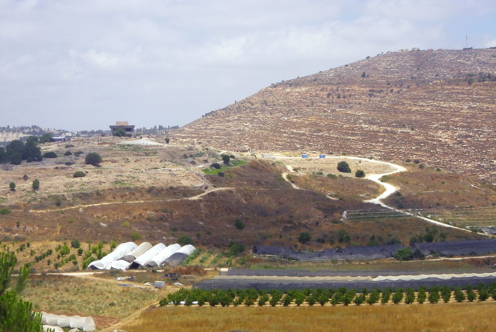

Judges 21 — The Mister Translation

The mound of ancient Shiloh, where the yearly “feast of Jehovah” of verse 19 was held and where the daughters of Shiloh came out to dance. The site lies where the chapter puts it, north of Bethel and east of the highway to Shechem; the terraced slopes around it are the kind of ground where the men of Benjamin lay in wait “in the vineyards”. The round building on the mound is a modern visitor centre.
_2017.jpg){kind=link}
Translator's Notes — verse by verse
An oath told late. The chapter opens on an oath that Judges 20 did not mention: at Mizpah, where all Israel gathered (Judges 20:1, now on these pages), the men had sworn, “Not a man of us will give his daughter to Benjamin as a wife.” Josephus places the oath after Gibeah refused to give up its young men (Antiquities 5.155, numbered 5.2.10 in Whiston). The ASV has “There shall not any of us give his daughter unto Benjamin to wife”; the NWT 1984 “Not a man of us will give his daughter to Benjamin as a wife”.
Great weeping. For the third time the people come to Bethel and weep (Judges 20:23 and 20:26, now on these pages), now “until evening before God”, and “they lifted up their voices and wept with great weeping”. The words “great weeping” stand in four verses of the Hebrew Bible; the others are David’s household after Amnon’s death and Hezekiah in his sickness, told twice (2 Samuel 13:36, 2 Kings 20:3 and Isaiah 38:3). The KJV has “wept sore”, the NWT 1984 “indulge in a great deal of weeping”. The ASV keeps the name, “the people came to Beth-el”; the KJV translates it, “the people came to the house of God”.
“One tribe missing.” “Why, Jehovah God of Israel, has this happened in Israel, that today one tribe should be missing from Israel?” The verb is paqad, which in the chapter before meant “mustered” (Judges 20:15 and 20:17): the count comes up one tribe short. The form stands in one verse of the Hebrew Bible. The ASV has “that there should be to-day one tribe lacking in Israel”, the NWT 1984 “for one tribe to be missing today from Israel”. The next morning they build an altar there and offer burnt offerings and peace offerings, as at 20:26.
A second oath. Israel had also made “the great oath” against whoever did not come up to Mizpah: “He shall surely be put to death”, mot yumat, the formula of the law’s death sentences, as in “Whoever strikes a man so that he dies shall surely be put to death” (Exodus 21:12, now on these pages). Two oaths now bind the assembly: no daughters for Benjamin, and death for the absent. The ASV has “He shall surely be put to death”.
“Felt sorrow” and “hewn off”. “The sons of Israel felt sorrow for Benjamin their brother”: vayyinnachamu, from nacham, the verb used when Jehovah “regretted” making humankind (Genesis 6:6) and “relented” at his people’s groaning (Judges 2:18), both now on these pages. The ASV has “repented them for Benjamin their brother”, the NWT 1984 “began to feel regret over Benjamin their brother”. A tribe has been “hewn off”, nigda, the verb of “their Asherahs you shall hew down” (Deuteronomy 7:5, now on these pages); the form stands in seven verses of the Hebrew Bible. The NWT 1984 has “Today one tribe has been chopped off from Israel”.
Jabesh-gilead. The people are mustered, the verb of 20:15 and 20:17 again, and “there was not a man there of the inhabitants of Jabesh-gilead”, a town in Gilead across the Jordan. Jabesh will be Saul’s first rescue (1 Samuel 11:1–11, now on these pages), and its men will take down the bodies of Saul and his sons and bury them (1 Samuel 31:11–13): the king from Benjamin and the town that sent no one to the war against Benjamin are bound together later.
The ban. Twelve thousand “of the men of valor” go out to strike Jabesh-gilead “with the edge of the sword, with the women and the little ones”: “every male, and every woman who has known lying with a male, you shall devote to destruction”, the verb of the cherem. The KJV has “Ye shall utterly destroy every male”, the NWT 1984 “YOU should devote to destruction”.
Midian’s order. The command is the order Moses gave after the war on Midian: “kill every woman who has known a man by lying with him” and “every girl who has not known a man by lying with him, keep alive for yourselves” (Numbers 31:17 and 31:18, now on these pages). The words “lying with a male” stand in five verses of the Hebrew Bible, three in Numbers 31 and two here. Phinehas went with the army against Midian (Numbers 31:6). The Hebrew of verse 11 does not say what is to be done with the virgins; the B Greek text adds “but the virgins you shall keep alive. And they did so”, and so does the Douay, “but the virgins you shall save”. In verse 14 they are “the women whom they had kept alive”, chiyyu, Moses’ verb in “Have you let every female live?” (Numbers 31:15).
Shiloh “in the land of Canaan”. The four hundred are brought “to the camp at Shiloh, which is in the land of Canaan”, as though for a reader standing in Gilead. The same words describe Shiloh when the eastern tribes leave it for Gilead (Joshua 22:9, now on these pages). The ASV has “unto the camp to Shiloh, which is in the land of Canaan”.
“Proclaimed peace.” The congregation sends to the six hundred at the rock of Rimmon (Judges 20:47, now on these pages) and “proclaimed peace to them”, the words of the law for a foreign city under siege: “proclaim peace to it” (Deuteronomy 20:10, now on these pages). Four hundred women for six hundred men: “but even so they did not find enough for them”. The ASV has “and yet so they sufficed them not”, the NWT 1984 “but they did not find enough for them”.
A breach. “The people felt sorrow for Benjamin, because Jehovah had made a breach in the tribes of Israel”: perets, the breach of Perez’s birth, “a breach upon you!” (Genesis 38:29, now on these pages). The words “a breach in the tribes” stand in one verse of the Hebrew Bible. The people lay the breach at Jehovah’s door; in the chapter before, Jehovah answered “Go up” each time they asked. The KJV has “had made a breach in the tribes of Israel”, the NWT 1984 “had made a rupture between the tribes of Israel”, the NIV “a gap in the tribes of Israel”.
“Not blotted out from Israel.” “There must be a possession for the remnant of Benjamin”, yerushat peletah, “so that a tribe is not blotted out from Israel”: machah, the verb of the brother-in-law’s duty, “so that his name is not blotted out from Israel” (Deuteronomy 25:6, now on these pages). The words “and not be blotted out” stand in two verses of the Hebrew Bible, there and here: what the law does for a dead man’s name the assembly must now do for a tribe. The ASV has “that a tribe be not blotted out from Israel”, the KJV “that a tribe be not destroyed out of Israel”.
The curse. The oath is restated as a curse: “Cursed is he who gives a wife to Benjamin”, in the form of the curses at Mount Ebal, “Cursed is he who makes light of his father or his mother” (Deuteronomy 27:16, now on these pages). Josephus says some urged the elders to set aside an oath sworn in anger, and the elders recoiled at the name of perjury (Antiquities 5.169–170, numbered 5.2.12 in Whiston). The ASV has “Cursed be he that giveth a wife to Benjamin”.
“Year by year.” The elders remember “the feast of Jehovah year by year in Shiloh”: miyyamim yamimah, the phrase of Elkanah, who “went up from his city year by year” to Shiloh (1 Samuel 1:3), and of the daughters of Israel who “went year by year” to commemorate Jephthah’s daughter (Judges 11:40), both now on these pages. The phrase stands in five verses of the Hebrew Bible. The narrator then gives Shiloh’s place as if the reader might not know it: north of Bethel, east of the highway from Bethel to Shechem, south of Lebonah. The A Greek text has “south of the Lebanon of Lebona”. Josephus says the women and daughters came to Shiloh three times a year (Antiquities 5.170). The ASV has “a feast of Jehovah from year to year in Shiloh”.
“Lie in wait.” “Go and lie in wait in the vineyards”: arav, the verb of the ambush that took Gibeah (Judges 20:29 and 20:37, now on these pages), now set against the daughters of Shiloh. The written Hebrew of verse 20 has “he commanded”, and the margin “they commanded”. Josephus has the two hundred wait in twos and threes in the vineyards (Antiquities 5.172).
The dancers. “If the daughters of Shiloh come out to dance in the dances”: the words “in the dances” stand in five verses of the Hebrew Bible, and one is Jephthah’s daughter, “coming out to meet him with timbrels and with dances” (Judges 11:34), as Miriam’s women went out “with timbrels and dances” (Exodus 15:20), both now on these pages. The men are to “snatch” them, chataf; the verb stands elsewhere only in Psalm 10:9, of a wicked man who lies in wait to snatch the poor. The KJV has “catch you every man his wife”, the NWT 1984 “carry off for yourselves by force each one his wife”, the NIV “each of you seize one of them to be your wife”.
“Be gracious to us concerning them.” The fathers and brothers will come “to bring a complaint”: the written Hebrew has larov, the margin lariv, the verb of a lawsuit. The elders’ answer is that the oath was not broken, since the fathers did not “give” their daughters: “for you did not give them to them, or you would now be guilty”. The ASV has “Grant them graciously unto us”, the KJV “Be favourable unto them for our sakes”, the NWT 1984 “should their fathers or their brothers come to conduct a legal case against us”.
Carried off. The sons of Benjamin take wives “from the dancers whom they had carried off”: gazal, the verb of robbery, as when the men of Shechem “robbed everyone who passed by on the road” (Judges 9:25, now on these pages). The ASV has “of them that danced, whom they carried off”, the KJV “whom they caught”, the NWT 1984 “whom they snatched away”. They go home and build the cities that were sent up in fire (Judges 20:48, now on these pages).
“Each to his inheritance.” The sons of Israel go home, “each to his tribe and to his clan … each to his inheritance”, the words of Joshua’s last dismissal, “So Joshua sent the people away, each to his inheritance” (Joshua 24:28), told again at the start of this book (Judges 2:6), both now on these pages. The words “each to his inheritance” stand in four verses of the Hebrew Bible. The book ends where its story began after Joshua, with the tribes going home, but now short of most of one tribe.
The last word. “In those days there was no king in Israel; each man did what was right in his own eyes”: the same words as Judges 17:6; the full sentence stands in two verses of the Hebrew Bible, and “there was no king in Israel” frames these last five chapters (18:1, 19:1, all now on these pages). The ASV has “every man did that which was right in his own eyes”; the NWT 1984 “What was right in his own eyes was what each one was accustomed to do”; the Douay joins the last two verses into one, “every one did that which seemed right to himself”. The next book opens “in the days when the judges judged” (Ruth 1:1, now on these pages), and in Bethlehem.
Patterns worth carrying forward
Where this translation keeps the words exact and distinct: “great weeping” for bekhi gadol; “missing” and “mustered” for the two senses of paqad; “he shall surely be put to death” for mot yumat; “felt sorrow” for nicham; “hewn off” for nigda; “lying with a male” and “kept alive”, as in Numbers 31; “proclaimed peace”, as in Deuteronomy 20; “a breach” for perets; “blotted out” for machah, as in Deuteronomy 25; “year by year” for miyyamim yamimah; “lie in wait” for arav, as at Gibeah; “snatch” for chataf and “carried off” for gazal; and “each to his inheritance”, as with Joshua.
Echoes paid. The oath at Mizpah and the weeping at Bethel take up Judges 20:1 and 20:26, and the six hundred at the rock of Rimmon of 20:47 come home. Moses’ order at Midian (Numbers 31:17–18), the law of peace for a besieged city (Deuteronomy 20:10), the name “not blotted out” (Deuteronomy 25:6), Jephthah’s daughter’s dances and yearly mourning (Judges 11:34 and 11:40), and Joshua’s dismissal “each to his inheritance” (Joshua 24:28) all return, and the refrain of Judges 17:6 closes the book.
Echoes planted. Jabesh-gilead will be Saul’s first rescue and will bury him (1 Samuel 11 and 31:11–13), Elkanah will go up “year by year” to the same feast at Shiloh (1 Samuel 1:3, now on these pages), and Hosea will remember “the days of Gibeah” (9:9 and 10:9). Of these, 1 Samuel 1:3 and the rescue of 1 Samuel 11 are on these pages so far.
Judges ends here. The story continues in Ruth 1 (now on these pages), “in the days when the judges judged”, with a famine in Bethlehem.